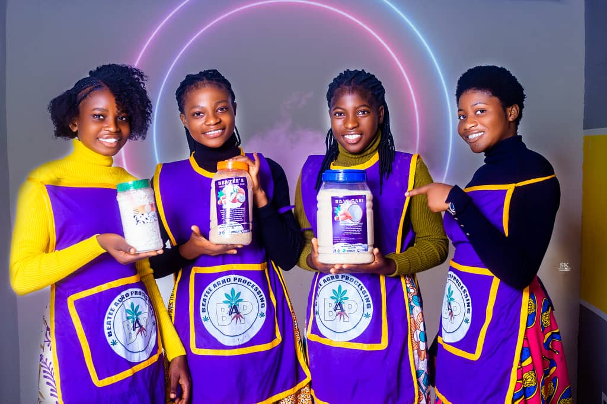

Welcome to BEATEE AGRO-PROCESSING, the home of premium, hygienically processed Gari that brings the true taste of Ghana to your table. We take pride in transforming fresh, locally sourced cassava into high-quality Gari that nourishes families and supports our local farmers.
At BEA-TEE AGRO PROCESSING, we believe that great food should not only taste good but also make people happy that’s why we’re known as the “Bringer of Joy.” Every grain of our Gari is carefully processed under strict hygiene and quality standards to ensure freshness, flavor, and nutrition.
From farm to factory, our dedicated team works with passion and care to produce Gari that meets the needs of both local and international markets. Whether you enjoy it with sugar and milk, soakings, or as part of your favorite meal, our Gari delivers consistent quality and delicious taste every time.
What Makes Our Gari Special
100% natural cassava, no preservatives.
Hygienically processed and packaged.
Smooth texture and rich flavor.
Available in both White and Yellow Gari.
Trusted by homes, retailers, and wholesalers.
Our Product
Introduction
At BEATEE AGRO-PROCESSING, every grain of Gari tells a story a story of dedication, purity, and the pride of Ghanaian craftsmanship.
We specialize in producing top-quality White Gari and Yellow Gari, made from the finest locally sourced cassava.
Our Gari is not just food; it’s an experience the true taste of Ghana that connects families, communities, and traditions.
From peeling to roasting, each step of our production process follows strict hygiene and safety standards.
The result is clean, crispy, and flavorful Gari that lasts long, tastes fresh, and cooks or soaks perfectly every time.
Our customers trust us because we deliver consistency, quality, and joy just as our slogan says: “Bringer of Joy.”
Service One
This is where you write something short about this service or picture.
Service Two
Write a few lines about what this picture represents or describes.
Service Three
Explain something interesting or important about this section.

Our Product Range
🌾 1. White Gari
Pure and natural our White Gari is made from carefully selected cassava tubers with no additives or preservatives.
It’s loved for its smooth texture, clean aroma, and authentic taste that reminds you of home.
Perfect for:
Soakings with sugar, milk, and groundnuts.
Eba and other traditional dishes.
Retail packaging or bulk supply for traders.
Key Features:
100% natural, sun-dried and roasted.
Long shelf life.
Hygienically packed and sealed.
Available in fine, medium, and coarse textures.
🟡 2. Yellow Gari
Enriched with pure red palm oil, our Yellow Gari brings extra flavor, color, and nutrition to your meals.
It’s crunchy, golden, and a favorite for both home cooking and outdoor meals.
Perfect for:
Making “Gari foto” or “Gari jollof.”
Street food vendors and family meals”
Export and bulk supply for distributors.
Key Features:
Naturally colored with palm oil.
Rich in Vitamin A and healthy fats.
Distinct golden color and appetizing taste.
Carefully roasted for uniform texture and flavor.
🧺 3. Fortified and Custom Gari (Optional)
We also offer Fortified Gari enriched with essential vitamins and minerals — ideal for schools, hospitals, and organizations promoting nutrition.
For wholesalers and export partners, we provide custom packaging, labeling, and branding to suit your business needs.
Available Packaging Sizes:
Making “Gari foto” or “Gari jollof.”
Street food vendors and family meals”
Export and bulk supply for distributors.
Our Quality Commitment
At BEA TEE AGRO PROCESSING, quality is not just a goal it’s our identity. We maintain strict hygiene from farm to factory. Our equipment is regularly sanitized, and our workers are trained to follow safe and responsible food-handling practices.
Every batch of Gari passes through careful sieving, roasting, and drying to achieve the perfect texture and flavor. Our packaging is airtight, ensuring that the freshness of your Gari remains intact for months.
Every batch of Gari passes through careful sieving, roasting, and drying to preserve its rich flavor.
Our packaging is airtight, ensuring that the freshness of your Gari lasts longer.
Why Choose BEA TEE Gari?
Made from 100% locally sourced cassava.
Zero chemicals or artificial preservatives.
Hygienically processed with modern equipment.
Affordable pricing with reliable supply for all customers.
Trusted by households, shops, and wholesalers across Ghana.
Message from the Founder
“At BEA TEE AGRO PROCESSING, we believe that every meal should bring happiness. That’s why we pour our passion and effort into every pack of Gari we produce. From the farmer who plants the cassava to the customer who opens the bag, we make sure everyone feels the joy in what we do.”
Founder: JULIANA AFI YAMENU